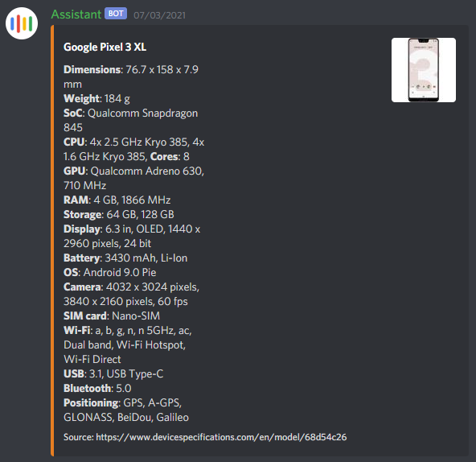
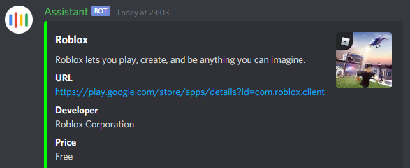

The Assistant bot is a bot I have made for use on a Discord server. It has multiple features for the server, adding functionality other off the shelf bots don't provide.
One of the most used features is the specs feature. This scrapes phone and tablet specifications from devicespecifications.com and shows it in an easy to read format in an embed message.
Another user feature is the linkme feature, which links Google Play Store apps and shows relevant information about the app. It also automatically converts AMP links to regular web links instead when AMP links are posted.
There are some moderation features too, mostly to prevent users who are known to cause problems from joining.
The bot is hosted on an AWS EC2 instance and has continuous integration set up with Travis and Docker, so any pushes to the main branch on GitHub are built into a Docker images, which are uploaded to Docker Hub and then pulled to the server and automatically run.